画像にリンクがはってあるものは、クリックすると別窓で大きめサイズが表示されます。
[門番兵]
所在地；アマツ城主の母上の家（168,179）付近 |
| 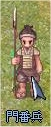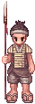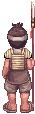 |
[門番兵]
所在地；アマツ城主の母上の家（168,179）付近 |
| 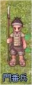 |
[石田吉長]
所在地；アマツ城（東湖城泉水閣）内3F |
| 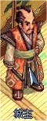 |
[浩次]
所在地；アマツ（189,165） |
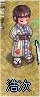 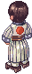 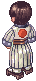 |
[トカコ]
所在地；アマツフィールド神社（174,328）内 |
| 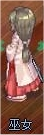 |
[タケフミ]
所在地；アマツフィールド神社（174,328）内 |
| 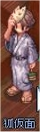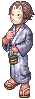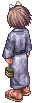 |
[石田サヨコ]
所在地；アマツ城主の母上の家（168,179）内 |
 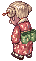 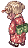 |
back
(c) Gravity Co., Ltd. & Lee MyoungJin(studio DTDS). All rights reserved.
(c) GungHo Online Entertainment, Inc. All Rights Reserved.
当コンテンツの再利用（再転載・配布など）は、禁止しています。